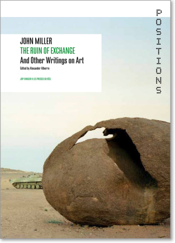
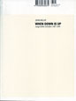
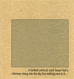
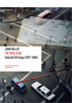
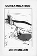
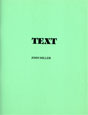

JOHN MILLER
Exhibitions
1980-1985
1986-1989
1990-1995
1996-1999
2000-2005
2006-2009
2010-Present
 Essays Essays
Publications
Collaborations
Bio/Bibliography
Contact
Return to Index
About this site
© 2005-2010
|
|
2013

The Ruin of Exchange And Other Writings on Art, edited by Alexander Alberro, JRP-Ringier, Zurich and Les presses du réel, Dijon, 2013. |
2010
XXX Macarena: Performance, Kunsthalle Zürich, 28. August 2009 (Jutta Koether, John Miller and Tony Conrad), 12” vinyl record, 41:54 min., From the Nursery/Primary Information, New York 2010. |
2009
Selling Short: XXX Macarena (Jutta Koether and John Miller), Import series audio CD, MFC–Michèle Didier, Brussels and Les presses du réel, Dijon 2009.
Shooting Log, MFC–Michèle Didier, Brussels 2009. |
2008

Between Artists: Maria Eichhorn/John Miller, A.R.T. Press, NewYork 2008.
|
2006
In Person: Robot, audio CD, North Drive Press, New York 2006. |
2005
“493 KB,” Next Level: if..., no. 7 (Edition 1, vol. 4) Bluesmodernist Ltd., London, 2005: pp. 112-115. (ill.)
Something for Everyone (video, 29:24 min. with Richard Hoeck), Hoeck–Miller–Riff Productions, Vienna 2005. |
2004

I’ve been listening to depressing music lately. Maybe because I’m depressed…, Cabinet des estampes, Geneva and Walther König Verlag, Cologne 2004.
|
2003
Fatalism and Fun, Support Agentur, Berlin 2003.
“Traces of Corporeality in the Ramble,” (with Robert Nickas), Into the Abyss (Spring 2003), Powerhouse Books, New York pp. 20-25; republished in Bob Nickas, Theft Is Vision, JRP-Ringier & Les Presses du Réel, Zurich and Dijon, 2008, pp. 42-52. |
2001

When Down Is Up: Selected Writings, Revolver–Archiv für aktuelle Kunst, Frankfurt am Main 2001.
|
2000
Wake-Up Time (with Takuji Kogo), Neuer Aachener Kunstverein, Aachen 2000.

...it looked comical: each house had a chimney rising into the sky, but nothing next to it, Cabinet des estampes, Geneva 2000.

The Price Club: Selected Writings, 1977–1996, JRP Editions, Geneva and Les presses du réel, Dijon 2000.
|
1997
A Trail of Ambiguous Picture Postcards, Korinsha Press, Kyoto and the Center for Contemporary Art, Kitakyushu 1997.
|
1996

It was a beautiful day, in the seventies. I watched people on pogo sticks in the park, Cabinet des estampes, Geneva and Kunstbüro, Museum für Literatur am Oberrhein, Karlsruhe 1996.
|
1995
"Art as Discourse," Sprechen ¸ber Kunst,
(Oktagon Verlag, Stuttgart, compiled by Bernd G. Milla)
|
1986
The True Voice, Benjamin Weissman (ed.), Storytellers, vol. 1, Foundation for Art Resources (F.A.R.), Los Angeles 1986; excerpted in Ferro Botanica, no. 4, Steel Garden Press, Hoboken 1984, p. 59–70.
|
1982

Cave Canem, Dan Walworth and John Miller (eds.), Cave Canem Books, New York 1982.

Contamination, Cave Canem Books, New York 1982; excerpted in Details, Musée de Grenoble, Grenoble 1981, This was a self-published novella.
Real Life Magazine, New York, Spring–Summer 1982, p. 22–24 and Barney, Fred & Barney Press, no. 3, Los Angeles 1983, pp. 28-30.
|
1981
Mixup, 45 rpm vinyl disc (face 1: Mixup, face 2: Hi Sheriffs of Blue), Tweet Records, New York 1981; excerpt face 1: Mixup included in Tellus, no. 7., audiocassette.
|
1980

Text, self-published, New York 1980.
|
1979
Cinematic Moments, New York: self-published.
|
|